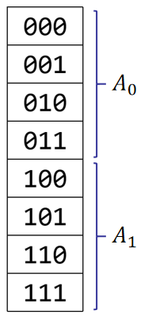

whoseJam
也叫快速沃尔什变换，类比于快速傅里叶变换，快速沃尔什变换着手于快速完成集合上的卷积操作
我们有以下三种比较常见的集合上的卷积：
设集合大小为 $n$，最暴力的做法时间复杂度显然是 $O(2^{2n})$ 的
int All=(1<<n);
for(int i=0;i<All;i++)
for(int j=0;j<All;j++)
C[i|j]+=A[i]*B[j];
而快速沃尔什变换，提供了一种以 $O(n2^n)$ 的时间复杂度计算上式的做法，并且代码还非常简单
$$ C_x=\sum_{i\cup j=x}A_iB_j $$
$$ C_x=\sum_{i\cup j=x}A_iB_j $$
首先，我们构造一个变换 $FWT(A)_i=\sum_{j\cap i=j}A_j$
则有：
$$ \begin{aligned} FWT(C)_y&=\sum_{x\cap y=x}C_x \\ &=\sum_{x\cap y}\sum_{i\cup j=x}A_iB_j \\ &=\sum_{i\cap y=i}A_i\sum_{j\cap y=j}B_j \\ &=FWT(A)_yFWT(B)_y \end{aligned} $$
如何实现 $A\rightarrow FWT(A)$呢？
考虑把 $A$ 划分为等长的两部分 $A_0$ 和 $A_1$
对于任意 $i\le \frac n 2$，都应该有 $A_i$ 对 $A_{i+\frac n 2}$ 产生贡献

如果我们把这张更新图画出来......
$$ C_x=\sum_{i\cap j=x}A_iB_j $$
$$ C_x=\sum_{i\cap j=x}A_iB_j $$
首先，我们构造一个变换 $FWT(A)_i=\sum_{j\cap i=i}A_j$
则有：
$$ \begin{aligned} FWT(C)_y&=\sum_{x\cap y=y}C_x \\ &=\sum_{x\cap y=y}\sum_{i\cap j=x}A_iB_j \\ &=\sum_{i\cap y=y}A_i\sum_{j\cap y=y}B_j \\ &=FWT(A)_yFWT(B)_y \end{aligned} $$
如何实现 $A\rightarrow FWT(A)$呢？
考虑把 $A$ 划分为等长的两部分 $A_0$ 和 $A_1$
对于任意 $i\le \frac n 2$，都应该有 $A_{i+\frac n 2}$ 对 $A_i$ 产生贡献
如果我们把这张更新图画出来......
$$ C_x=\sum_{i\bigotimes j=x}A_iB_j $$
这玩意构造起来有点抽象，我们需要倒着研究一下
假设我构造出来了一个变换 $FWT(A)_i=\sum_{j=0}^{n-1}c(i,j)A_j$，我肯定希望能有： $$ FWT(C)_i=FWT(A)_i FWT(B)_i $$
既然等式左右两边应该相等，我们就顺着这条路往下推，看看 $c(\cdot,\cdot)$ 应该满足怎样的性质
$$FWT(C)_i=FWT(A)_i FWT(B)_i$$
对于等式左边，有： $$ FWT(C)_i=\sum_{p=0}^{n-1}c(i,p)C_p=\sum_{p=0}^{n-1}c(i,p)\sum_{t_1\bigotimes t_2=p}A_{t_1}B_{t_2} \\ =\sum_{t_1=0}^{n-1}\sum_{t_2=0}^{n-1}c(i,t_1\bigotimes t_2)A_{t_1}B_{t_2} $$
对于等式右边，有： $$ FWT(A)_iFWT(B)_i=\sum_{j=0}^{n-1}\sum_{k=0}^{n-1}c(i,j)c(i,k)A_j B_k $$
所以，我们得到了：$c(i,j)c(i,k)=c(i,j\bigotimes k)$
又由于位运算可以逐位考虑，我们只讨论：
这八种情况即可
首先对于任何位置，都有$c(i,j)c(i,j)=c(i,0)$，所以 $c(i,0)=1$，不能为 $0$，否则没办法构造 $c$ 矩阵的逆矩阵
由于 $c(i,0)c(i,1)=c(i,1)$，所以 $c(0,1)=\pm 1$，$c(1,1)=\pm 1$，它们两个不能相等，否则没有逆矩阵
综上，我们可以构造出一个这样的矩阵 $c$ 来： $$ c= \begin{bmatrix} 1&1\\ 1&-1\\ \end{bmatrix} $$